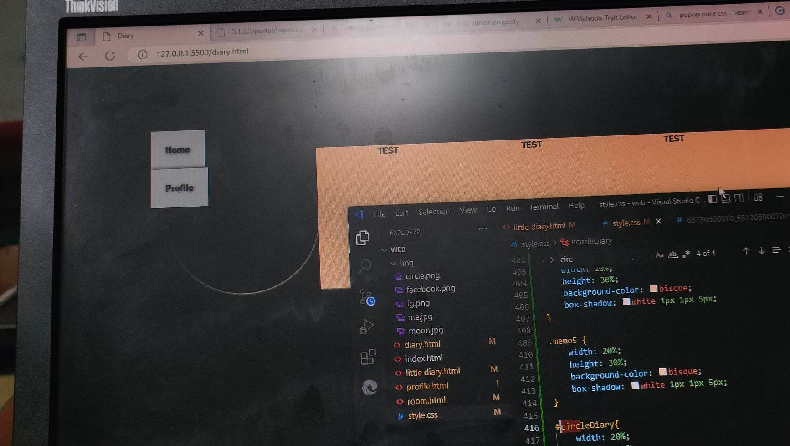
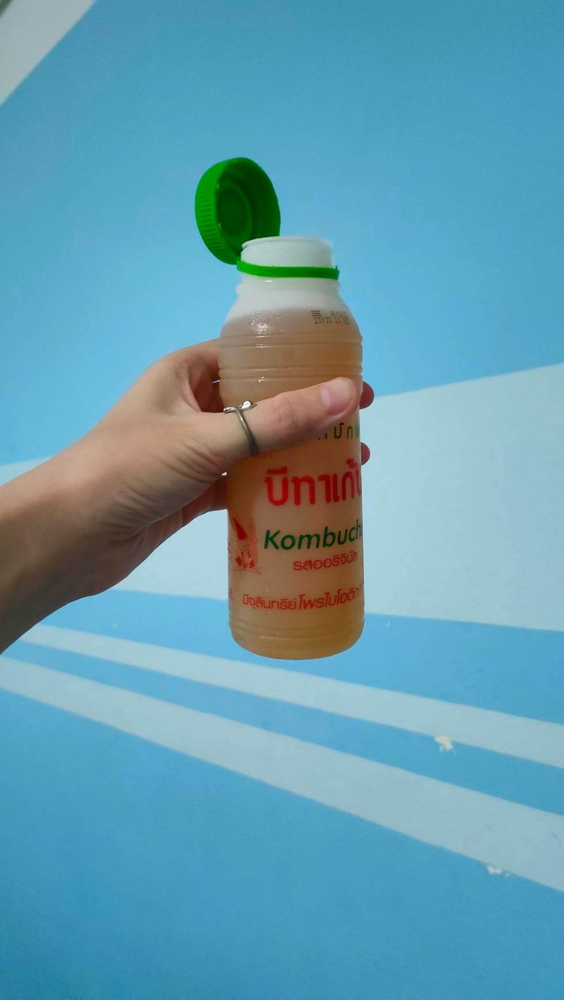

วันที่ 21 พฤศจิกายน 2022 🌕
วันนี้เป็นอีกวันที่ค่อนข้างดาวน์เลย เหมือนเป็นวันที่ไม่เป็นใจอีกหนึ่งวัน พลอยจัดกิจกรรมเล็ก ๆ ที่มีคนเล่นแค่ไม่กี่คน ให้แต่ละคนแปะสีแต่ละวัน ตั้งกฎเรียบร้อยว่าห้ามเกินวัน แต่เพื่อน ๆ ก็แหกกฎแล้วลงกัน ทำให้พลอยน้อยใจแล้วก็งอนมาก มากกว่าที่ไม่เล่นอีก ทำให้ถึงช่วงบ่ายพลอยตึงแล้วก็แทบไม่คุยกับใครเลย อารมณ์ไม่จอยมาก ๆ

เจอคนเดินมาถามทางด้วย 2คน แต่พลอยก็ดันช่วยอะไรเขาไม่ได้เลย เพราะพลอยจำร้านลุงหนุ่มที่ย้ายไปไม่ได้ว่าย้ายไปไหน มาคิดอีกที พลอยควรจะช่วยได้มากกว่านี้
สุดท้ายพลอยก็เคลียร์อารมณ์ตัวเอง แล้วไปดูสถานที่ถ่ายอังกฤษได้ พลอยได้ลองไมค์ด้วย ตื่นตาตื่นใจมาก ไมค์หมื่นห้า! เพื่อนลงทุนเพื่องานเสมอมา!
ช่วงเย็นมีเพื่อนมาทำงานด้วยเพิ่มอีก1 ตอนแรกบรรยากาศก็เงียบหน่อย พลอยเลยเปิดเพลง แล้วก็ผ่อนคลายขึ้น แต่พอมาถึงจุดนึง พลอยติดบัคเว็บเทค จังหวะนั้นเพื่อน ๆ รุมช่วยพลอย แต่แทนที่พลอยจะขอบคุณพวกเขา พลอยกลับตอกย้ำตัวเองว่าพลอยไม่ได้เรื่อง ไม่เอาไหนเลยสักอย่าง เอาทุกเรื่องที่เจอมาในวันนั้นมาคิดแล้วยำรวมกันให้ตัวเองซึมเล่นซะแบบนั้น แล้วก็ตึงใส่ทุกคนแบบนั้น แหะแหะ ขอโทษนะคั้บ 55 